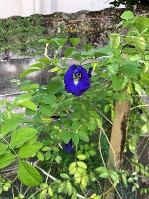
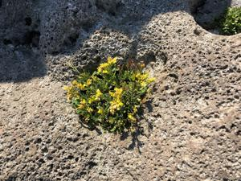
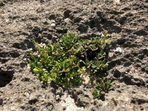

うるがいの話 ある日
最新: 島うたうるがいとは 前提知識です
カニの画像をクリックすると『うるがいの話』サイトを表示します|
|
【うるがいの話】 うるがい(ｳﾙｶﾞｲ urugai)とは、『もずくがに』の名前でとても大きくなります。 |
|---|---|
|
|
【Got cat カミマヤーの話】 たながー（ﾀﾅｶﾞｰtanagaa）とは手長えびのことで、何種類かあり大きいのは車 エビぐらいになります。 |

|
【ぶながぁの話】 ぶながー(bunagaa)とは、赤い髪の毛、赤い身体、そして身長は１ｍ２０ｃｍ ぐらい、川の蟹を食べているの目撃された。場所は沖縄県国頭郡大宜味村のと ある村僕の隣近所に住んでいる爺さんから、聞いた話です。 |
|
|
【ギーマの話】 ギーマ(giima)とは、山原の里山に咲くスズランに似た、 花を付けます。実は食べられます、 気が付くと口の周りが紫になっています。 |
2021年11月14日 (日）島うた
13:35
  

いつものラジオ番組が放送されていない。「ＲＢＣレコードライブラリー回る
島うた 生まりうた」ＲＢＣレコードライブラリーに収められている１０万点
の中から、貴重な音源、琉球古典音楽から民謡、島うたの数々を・・・、たっ
た１５分の番組だがラジオ問い合わせフォームに投稿する。
ペンネーム：番組の元アルバイト生
今朝（１１月１４日）６時３０分にラジオのスイッチを、つけるといつもの『
回る島うた 生まりうた』が放送していない！。慌てて、新聞の番組欄を調べ
てみると無い、新聞のデジタル版で確認すると放送は先月で終わっていたこと
を知りました。毎週、日曜日はこの番組を放送しながらとトートメー（仏壇）
にウートートーします。先週はたまたま、放送を聞いていませんでした。そこ
で、番組の始めに流れる男性の掛け声（イヨー・・・、この番組の冒頭でも似
たような掛け声がある）がある民謡は、なんと言う曲なのでしょうか教えて頂
きたく投稿しました。出来れば、もと番組を担当していた島袋千恵美さん担当
の曜日に曲（掛け声があるもの）を放送して頂けると嬉しいです。
１９８０年（昭和５５年）頃、大学生のときに３回ほど、ＲＢＣラジオの「民
謡で今日拝なびら」（番組名が同じか定かではない）で当時の宮城ディレクタ
ーの元で、本島内の公民館などで行われていた上原直彦さん司会の公開録画で
会場作りなど番組のアルバイトをしました。名護市の会場では、北島角子さん
に段取りが悪い！とげきを飛ばされたこともありました。
数年前に定年退職し、昼４時になるとこの番組を聞いています。時間があるの
で、ひと月まえから三線を弾き始めました。「回る島うた 生まりうた」は私
にとって、ＮＨＫのラジオ体操と同等の文化でした。